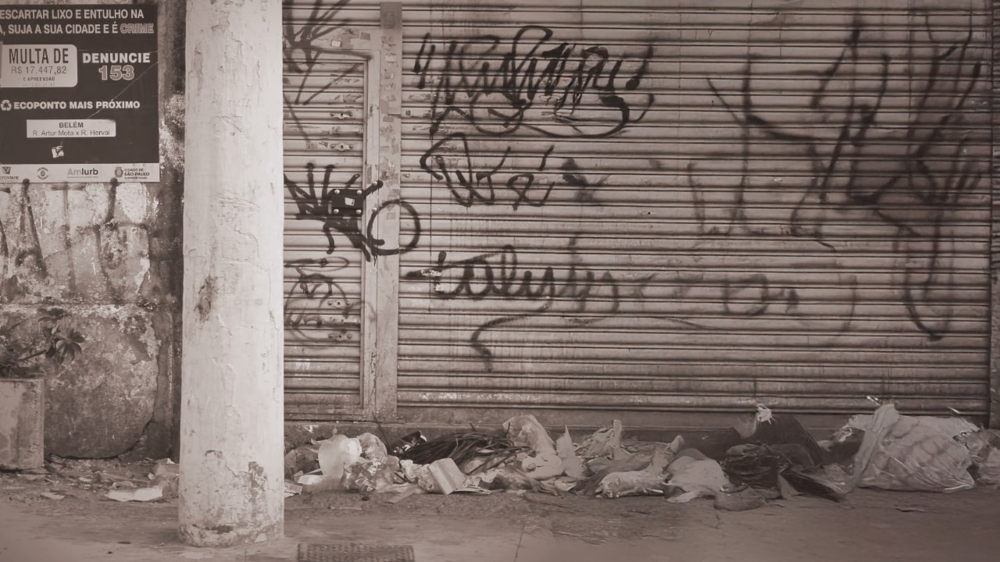
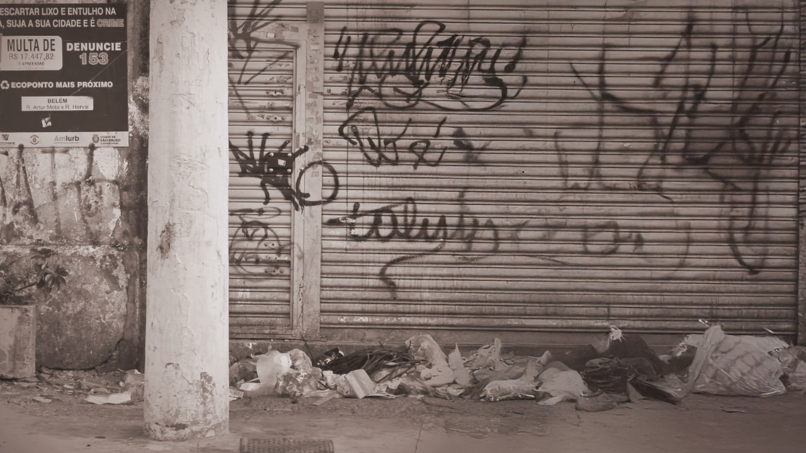

LIXO NA RUA: ZONA LESTE DE SP VIVE CRISE SANITÁRIA QUE ALIMENTA RISCO DE EPIDEMIA
.jpeg)
Descarte irregular persiste apesar de Ecopontos e transforma bairros em focos de vetores de doenças;
burocracia das Subprefeituras é apontada como entrave.
A má gestão de resíduos sólidos e o descarte irregular de lixo, entulho e móveis usados continuam a ser um
dos maiores desafios urbanos na Zona Leste de São Paulo. Apesar da expansão dos Ecopontos e de campanhas de
conscientização, o problema se repete em vias importantes como a Rua Melo Freire, a Avenida Arraias do
Araguaia, e a Avenida Celso Garcia. Em locais como a Penha de França, mesmo com um ponto de coleta próximo,
o problema persiste, evidenciando a falta de conscientização da população.
A acumulação de sacos de lixo abertos e restos de alimentos nessas áreas atrai animais sinantrópicos –
aqueles que vivem próximos aos humanos e se beneficiam do ambiente urbano, mas não foram domesticados –
aumentando drasticamente o risco de transmissão de doenças. O lixo espalhado cria um ambiente propício para
a proliferação de vetores de enfermidades graves, como ratos, baratas e mosquitos. A situação eleva o risco
de doenças como a dengue e, principalmente, a leptospirose.
Ciclo de Contaminação e Consequências:
O acúmulo de entulho e lixo tem sérias consequências ambientais e sociais. Além dos riscos sanitários, a
obstrução de bueiros e bocas de lobo contribui diretamente para enchentes em períodos de chuva. Essa água,
contaminada pela urina de roedores, potencializa o ciclo de transmissão da leptospirose, que pode ocorrer
pelo contato da pele com feridas ou mucosas. O problema também afeta a estética urbana, causa mau cheiro,
desvalorização imobiliária e a sensação de abandono.
Entrave Burocrático:
Moradores relatam que a dificuldade de resolver o problema passa pela falta de autonomia das Subprefeituras,
que dependem de autorizações das Secretarias municipais para agir, o que atrasa as respostas e intensifica o
acúmulo de lixo nas vias públicas. Para especialistas em gestão urbana, a solução exige uma combinação de
educação ambiental, fiscalização efetiva e políticas públicas descentralizadas, além de penalidades mais
rigorosas contra quem descarta lixo de forma irregular.
Alerta Máximo Contra Zoonoses Urbanas: Mosquitos, Ratos e Pombos Elevam Risco Sanitário
.jpeg)
Comunidade precisa estar atenta a doenças graves como Leptospirose, Hantavirose e Criptococose; lixo e
água parada são os principais alimentadores.
A proximidade de animais sinantrópicos em áreas urbanas coloca a saúde pública em risco, sendo o lixo
acumulado e o esgoto os principais fatores que beneficiam a sua proliferação. A má gestão de resíduos, como
visto na capital paulista, intensifica a ameaça de doenças transmitidas por vetores.
Entre as principais ameaças, destacam-se:
Ratos (Vetores de Leptospirose e Hantavirose): A Leptospirose é uma infecção bacteriana grave
transmitida
pelo contato com urina de rato infectado em água parada ou lama. A Hantavirose é transmitida pela inalação
de poeira contaminada com fezes e urina secas de roedores. Ambas podem ser fatais, exigindo tratamento
imediato e em casos graves, internação.
Pombos (Vetores de Criptococose e Histoplasmose): Estes animais, que vivem no meio urbano,
podem transmitir
fungos pela inalação de poeira contaminada com suas fezes secas, causando infecções pulmonares e até
meningite fúngica.
Mosquitos (Aedes aegypti): Continuam sendo um dos vetores mais perigosos do mundo, transmitindo
Dengue,
Zika, Chikungunya e Febre Amarela.
A prevenção passa por medidas simples, mas urgentes: manter ambientes limpos, tampar caixas d’água e ralos,
evitar água parada e procurar atendimento médico imediato em caso de sintomas suspeitos. O diagnóstico de
doenças como a leptospirose pode ser confundido com dengue ou gripe, reforçando a importância do
acompanhamento médico.
O Preço da Inércia: Da Burocracia ao Desperdício Social
.jpeg)
A crise de lixo e entulho, especialmente na Zona Leste de São Paulo, não é apenas um problema de limpeza
urbana, é um atestado de falha sistêmica e de irresponsabilidade mútua. Em uma das maiores metrópoles do
mundo, é inaceitável que o descarte irregular persista, transformando vias públicas em depósitos a céu
aberto e alimentando vetores de doenças letais, como a leptospirose e a dengue.
O poder público, por um lado, demonstra uma burocracia paralisante. A dependência de
autorizações que
impedem as Subprefeituras de agir com a rapidez necessária apenas intensifica o acúmulo e o ciclo vicioso de
degradação. É preciso descentralizar as políticas públicas e promover a fiscalização efetiva, com
penalidades rigorosas contra quem descarta lixo de forma irregular.
Por outro lado, a falta de consciência coletiva da população é um obstáculo vergonhoso. O cidadão que
abandona lixo na calçada, mesmo sabendo dos riscos ambientais e de saúde, age com uma miopia social
alarmante.
A inércia, tanto estatal quanto civil, está nos custando caro: em saúde pública, em desvalorização
imobiliária e em desperdício. A perda de materiais recicláveis que poderiam gerar renda e a exclusão social
dos catadores mostram que o problema do lixo é, acima de tudo, uma questão de justiça social e ambiental. O
caminho para o "aterro zero" e para uma cidade mais limpa passa pela vontade real de gestores em agir e pela
consciência de cada morador em ser parte da solução.
Soluções do Lixo: Da Geração de Energia à Compostagem na COP 30

Apesar dos desafios na gestão de resíduos, há avanços significativos no Brasil, principalmente no
aproveitamento energético do lixo:
Compostagem em Foco Global: A sustentabilidade ganha destaque com o uso de uma Composteira
Igapó na COP 30
(Belém, 2025). A máquina será utilizada para tratar até 5 toneladas de resíduos orgânicos por dia e ficará
em Belém após o evento, contribuindo para a redução da emissão de Gases de Efeito Estufa (GEE) e produzindo
adubo orgânico.
Aproveitamento de Biogás: Aterros sanitários, quando bem administrados, coletam o metano
(biogás) resultante
da decomposição do lixo para gerar energia elétrica. Um exemplo disso é o Aterro de Caieiras, que abriga uma
usina de biometano financiada pelo BNDES. A Eva Energia, em Mauá, também possui uma usina que converte
biogás de aterro em energia.
Modelo "Aterro Zero": Empresas privadas como a Luvitec, em Barueri, priorizam a reciclagem e
compostagem no
seu modelo de gestão, buscando o ideal de "aterro zero".
Inclusão de Catadores: A Lei Estadual 17.806/2023 em São Paulo obriga organizadores de eventos
a contratar
cooperativas de catadores para o gerenciamento dos resíduos, fortalecendo a inclusão social desses
profissionais, que são essenciais para a reciclagem no país.
 
